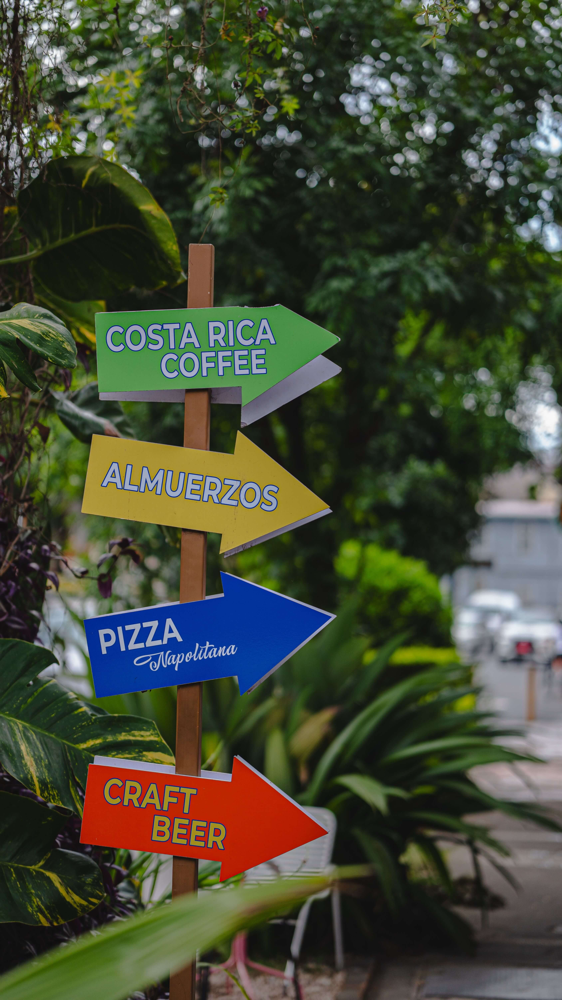

Best Sodas in La Fortuna: Eat Like a Costa Rican
Delicious and affordable local food guide.

If you want to experience the real flavor of Costa Rica without spending a fortune, you need to visit a "Soda". These are small, family-owned restaurants that serve traditional dishes like Casados and Gallo Pinto.
Top 3 Sodas You Must Try
1. Soda La Parada
Located right by the central park. It's famous for its huge portions and fast service. Perfect for watching the town's movement.
2. Soda Nene
A bit more quiet and very popular among locals. Their fresh fruit juices (batidos) are the best in town.
3. Soda Viquez
Excellent home-cooked flavor. Their 'Casado de Pescado' is highly recommended.
What to Order?
Don't leave La Fortuna without trying these:
- Casado: A big plate with rice, beans, salad, plantains, and your choice of meat.
- Gallo Pinto: The traditional breakfast of rice and beans mixed with Lizano sauce.
- Natural Juices: Try "Cas" "Guanabana" "Horchata" or "Maracuya".